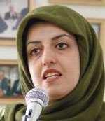

پذيرش > سایت نوشته ها > دفاع از حقوق بشر با پلمب تعطيل نمي شود
 نرگس محمدي در مصاحبه با روز نرگس محمدي در مصاحبه با روز

 دفاع از حقوق بشر با پلمب تعطيل نمي شود دفاع از حقوق بشر با پلمب تعطيل نمي شود
2 دی 1387 - روزآنلاین / مریم کاشانی - نسخه قابل چاپ
به دنبال پلمب دفتر کانون مداقعان حقوق بشر در تهران، با نرگس محمدي، سخنگوي اين کانون گفت و گو کرده ايم. خانم محمدي ضمن غيرقانوني خواندن پلمب دفترکانون مدافعان حقوق بشر و توصيف نحوه برخورد خشن ماموران امنيتي و لباس شخصي، تاکيد مي کند که "مدافعان حقوق بشربا پلمب شدن دفترو تنگناهايي از اين دست، از کار خود دست نخواهند کشيد و سختکوش تر به کار خود ادامه خواهند داد." اين مصاحبه در پي مي آيد.
از پلمب دفتر کانون بگوييد.
ما قرار بود درشصتمين سالگرد تصويب اعلاميه جهاني حقوق بشر مراسم ساده اي برگزار کنيم.برنامه هم عبارت بود از چند سخنراني، اهداي تنديس کوروش کبير به يک تلاشگر حقوق بشرو کارهايي در همين رديف. 300 مهمان داشتيم که همگي با کارت ويژه براي يک نفر دعوت شده بودند. البته اين دعوت به صورت علني نبود. تا اينکه در ساعت 4 و نيم بعد از ظهر نيروهاي امنيتي، لباس شخصي، ماموران اداره اماکن و نيروهاي انتظامي محل را در محاصره گرفتند. ده ها ماشين شخصي با دوربين تمام منطقه را پر کرده بودند. انقدر نيرو در منطقه يوسف آباد جمع شده بودند که تصور آن ممکن نيست. بعد ده پانزده نفر از اين نيروها، وارد ساختمان شدند که ما خواستيم مانع ورودشان شويم و تقاضاي مستند يا حکم قانوني براي ورود به ساختمان را کرديم؛ ولي آنها نه تنها به اين درخواست ما توجهي نکردند بلکه يکي از آنها ضمن هتاکي به من حمله کرد . او فحش هاي رکيک مي داد و مي گفت اگر زن نبودي ـ خيلي ببخشيد ـ لنگت را مي گرفتم و پرتت مي کردم بيرون. برخورد او طوري بود که مامورين انتظامي مانع او شدند و او را کشان کشان از ساختمان بيرون بردند. بعد هم دفتر را پلمب و ما را از آنجا بيرون کردند.
کدام دسته از ماموران برخوردهاي خشني داشتند؟
مجموعه اي از آنها، اما برخورد لباس شخصي ها بسيار خشن تر بود و حتي يکي از اعضاي شورايعالي نظارت را مورد ضرب و شتم قرار دادند.
مهمان ها رسيده بودند؟
مامورين باهر کسي که قصد ورود داشت، برخورد و مهمانان را متفرق مي کردند. حتي با خبرنگاران و عکاسان برخورد کردند و مانع ورود آنها به ساختمان شدند. دوربين عکاسان را هم گرفتند و فيلم ها را يا ضبط يا پاک کردند.
وسيله اي هم از آنجا بردند؟
نه، تمام وسايل در دفتر کانون و در اختيار اين نيروهاست. به همين علت اگر بعدا هر چيزي اعلام بکنند ما نخواهيم پذيرفت. نيروهاي امنيتي حتي فرصت ندادند که وسايل صورت برداري شود و به امضاي طرفين برسد. يعني به هرشکلي که تصور کنيد اقدام اين ماموران غيرقانوني بود، نه حکم ارائه دادند و نه صورت جلسه اي شد.
کسي هم دستگير شد؟
ما در دفتر نبوديم؛ يعني بعد از پلمب حتي اجازه ندادند جلوي دفتر کانون مدافعان بايستيم.آنها مي خواستند ما را به سمت کلانتري هدايت کنند که ما نرفتيم و بالاخره مجبور به ترک محل شديم.
خانم عبادي هم بودند؟
بله؛ ما بيش از يک ساعت به همراه خانم عبادي، اقايان شيرازي، سلطاني و اسماعيل زاده، سعي کرديم مانع پلمب يا حداقل انجام اين کار به صورت قانوني شويم ولي مقاومت ما به نتيجه اي نرسيد.
چه جور پلمبي کردند؟
با سيم و مهر.
پس معنيش اين است که دستور دادستان يا دادگاه را داشته اند؛ چون معمولا وقتي دستور قانوني ندارند با نصب يک کاغذ و ترساندن صاحبان مکان اين کاررا مي کنند.
ولي متاسفانه اين حکم را نشان ندادند. اگر وجود داشت بايد نشان مي دادند. اتفاقا اعتراض ما اين است که حتي اگر قصد پلمب دارند ـ که اين هم غيرقانوني است ـ بايد حکم نشان بدهند. اصلا دليل اين کار چه بود؟ اتهام ما چه بود؟ ما چه عمل غيرقانوني مرتکب شده بوديم که به موجب آن بايددفترپلمب مي شد؟ چرا در اين مورد يک رويه قضايي به کار گرفته نشد؟
الان چه مي کنيد؟
کاري نمي توانيم بکنيم، در ايران شب است، امکان پيگيري نداريم.
خودتان فکر مي کنيد علت اين پلمب چه مي تواند باشد؟
هر چند آقايان هيچ دليلي ارائه نکردند، امابه نظر ما اين کار پيامد فعاليت هاي کانون مدافعان حقوق بشرست.کانون سه محور فعاليت اساسي دارد که عبارتند از:
ـ گزارش دهي مستمر در زمينه نقض حقوق بشر در ايران
ـ وکالت رايگان متهمان عقيدتي و سياسي
ـ دفاع از خانواده هاي زندانيان سياسي و عقيدتي
در همين راستا گزارش هاي مکرر کانون مدافعان حقوق بشر در زمينه نقض حقوق بشر در ايران مورد استناد بسياري از نهادهاي بين المللي بوده است. نمونه آخر آن گزارش اخير دبيرکل سازمان ملل متحد در زمينه نقض حقوق بشر در ايران بود. اين گزارش مبتني بر گزارش هاي کانون مدافعان حقوق بشر بود و آقاي يان کي مون به اين نکته صراحتا اشاره کردند. اين گزارش که تهيه آن يک سال پيش از جانب مجمع عمومي سازمان ملل، به عهده دبيرکل اين سازمان گذاشته شده بود، با استناد به گزارش هاي کانون تهيه شده بود و بر اساس همان هم عليه جمهوري اسلامي قطعنامه اي صادر شد. اقدام امروز حکومت هم نشان داد که نقض حقوق بشر در ايران جديست؛ يعني در حاليکه شصتمين سالگرد صدور اعلاميه جهاني حقوق بشر در نهادهاي بين المللي و کشورهاي مختلف جشن گرفته شد، در ايران به مدافعان حقوق بشر حتي اجازه برگزاري يک مهماني ساده در محيطي سر بسته را ندادند و قضيه را به اين صورت درآوردند.
براي برگزاري اين مراسم به مجوز احتياح نداشتيد؟
نه در محيط سربسته به مجوز نياز نيست ولي با اين حال ما جريان را با مسئول نيروي انتظامي منطقه در ميان گذاشته بوديم.
او مخالفت نکرده بود؟
نخير؛ نه تنها مخالفت نکرده بودند بلکه مامورين انتظامي امروز در مقابل کساني که براي پلمب دفتر آمده بودند، اين اعتراض را مطرح مي کردند که چرا مي خواهيد اينجا را پلمب کنيد. اينها با ما هماهنگي کرده بودند. ما هم در اينجا حضور داريم، چرا اين کاررا مي کنيد! يعني در ميان خود نيروها هم هماهنگي نبود.
فکر مي کنيد حرکت بعدي کساني که دستور پلمب دفتر کانون مدافعان حقوق بشر را داده اند، چه باشد؟
من نمي دانم فقط بايد بگويم بسيار متاسفم که با تنها سازمان غيردولتي مدافع حقوق بشر در ايران که عضو رسمي فدراسيون بين المللي حقوق بشر نيز هست، چنين برخوردي مي شود. ما از سال 79 براي راه اندازي اين مرکز همه راه هاي قانوني را رفته ايم. حتي آقاي علي جنتي، معاون وقت وزارت کشور اعلام کرد که کانون ما رسمي است، اما با اين حال با چنين نهادي که رياست آن هم با برنده جايزه صلح نوبل است، چنين برخوردي مي کنند. اين اقدام غيرقانوني مهر تاييدي بود بر قطعنامه اخير سازمان ملل مبني بر اينکه نقض حقوق بشر در ايران جديست. اما توجه داشته باشيد که صداي ملت ها در پشتيباني از اعلاميه جهاني حقوق بشر، بسيار قدرتمند تر از صداي حکومت هاست.60 سال پيش سازمان ملل از دولت ها خواست که مفاد اعلاميه جهاني حقوق بشر را تبليغ و ترويج کنند؛ شايد آن زمان مسئولين سازمان ملل نمي دانستند که 60 سال بعد اين ملت ها هستند که اين اعلاميه را ترويج و تبليغ مي کنند. قدرت مردم برتر از دولت هاست و آنها عاقبت تک تک مواد اعلاميه جهاني حقوق بشر را بر دولت ها تحميل خواهند کرد. ما يک نيروي جهاني برحق هستيم وچونان زنجيره اي در سراسر دنيا به هم متصليم.با اين کارها صداي ما بلند تر و رساتر خواهد شد. مدافعان حقوق بشر با پلمب دفترشان دست از کار نخواهند کشيدو سخت کوش تر از هميشه به فعاليت هاي خود ادامه خواهند داد.
خانم محمدي! فردا صبح چه خواهيد کرد؟
اولين کار جمع کردن دوستان به قصد هماهنگي است؛ بعد از آن هم اطلاع رساني خواهيم کرد. ما از تمام مجاري قانوني داخلي و بين المللي استفاده خواهيم کرد؛ چرا که رسالت ما تبليغ و ترويج و اشاعه تک تک مواد اعلاميه جهاني حقوق بشر است و اين کار تعطيلي بردار نيست.
راستي اين برخورد به انتخابات و بسته شدن بقيه درهاارتباطي ندارد؟
ببيند واقعيت اين است که تحليل دقيقي از شرايط امروز ايران وجود ندارد، اما آنچه مسلم است اينکه شرايط بسيار سخت تر شده: وضع اقتصادي سخت تر،وضع سياسي سخت تر و تنگناها بيشتر شده است. البته که مدافعان حقوق بشر هم نمي توانند جدا از اين فضاي سنگين نفس بکشند.
روزآنلاین
ارسال به
بالاترین
،
توییتر
،
فریندفید
،
فیسبوک
در همين بخش :
 یک خبر تلخ؟ یک قانونشکنی؟ یک تصمیم بخشنامهای جدید؟ یک خبر تلخ؟ یک قانونشکنی؟ یک تصمیم بخشنامهای جدید؟
چرا بایست به سکسوالیته پرداخت؟ / نفیسه آزاد
آزارجنسی خانگی؛ «قربانی» نه، «نجات یافته»
زنان، بزرگترین بازندگان بهار عرب
سانسور از دیدگاه جنسیتی/الهه امانی
ديگر بخش ها :
طرح یک میلیون امضا
|
مقالات
|
سایت نوشته ها
|
اخبار
|
گزارش كمپين
|
گفت و گو
|
علیه سکوت
|
كوچه به كوچه
|
نامه های شما
|
گزارش ویژه
|
گفتگو با اعضا
|
ویژه سالگرد کمپین
|
تصویر برابری
|
دل آرام علی
|
تریبون
|
مقالات
|
تاریخ شفاهی
|
خارج از چارچوب
|
کتابخانه
|
درباره کمپین
|
کمپین در شهرها
|
کمپین در بند
|
صدای تغییر
|
ویژه 22 خرداد
|
لایحه حمایت از خانواده
|
گالری
|
عشا مومنی
|
امیر یعقوبعلی
|
خدیجه مقدم
|
راحله عسگری زاده و نسیم خسروی
|
پروین اردلان،جلوه جواهری، مریم حسین خواه، ناهید کشاورز
|
زینب پیغمبرزاده
|
سعیده امین، سارا ایمانیان، محبوبه حسین زاده، ناهید کشاورز و همایون نامی
|
احترام شادفر
|
نسیم سرابندی زاده،فاطمه دهدشتی
|
وبلاگ مهمان
|
پرونده خرم آباد
|
دستگیری ها
|
مریم مالک
|
پرستو اللهیاری
|
مهرنوش اعتمادی
|
سمیه رشیدی
|
Other Languages
|
همراهان
|
«فراخوان کمپین ده روز با بهاره هدایت»
| English
|